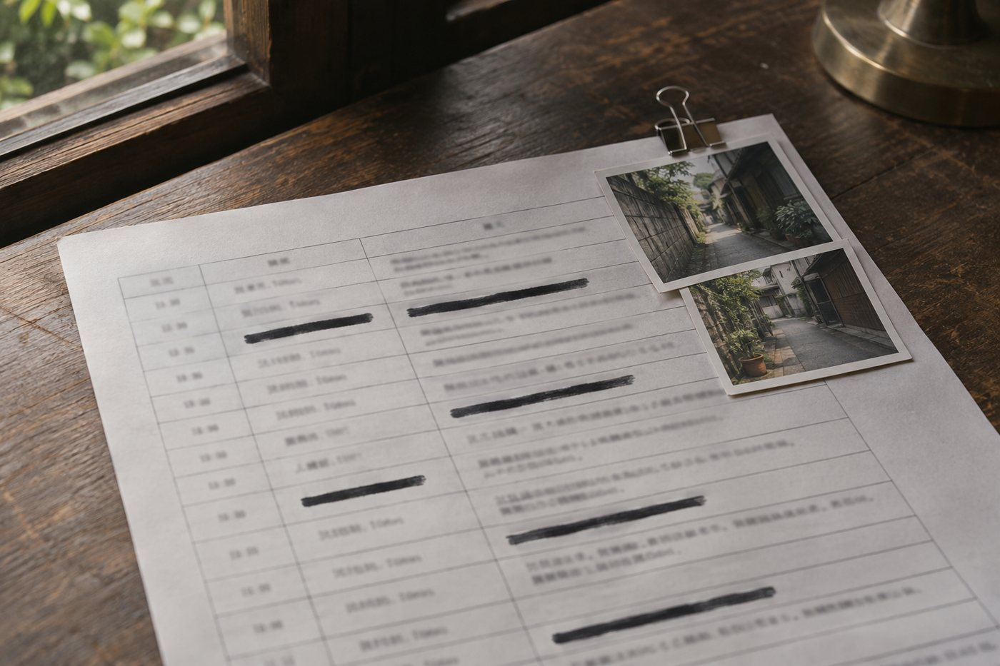

トップ ＞ 料金とご依頼の流れ
料金とご依頼の流れ
見積りの出し方
面談でお話を伺ったあと、「目安の総額」と「上限の金額」を書いた見積書をお出しします。下の料金表は、その計算に使う単価です。
調査が始まってから上限に近づいたときは、いったん手を止めてご連絡します。ご了承をいただかないまま上限を超えて調査を続けることはありません。上限まで使わずに終わった場合は、かかった分だけをいただきます。
料金表
すべて税込、調査員1名（代表）の料金です。
| 区分 | 料金 | 含まれるもの・条件 |
|---|---|---|
| ご相談・面談・見積り | 無料 | 面談は約1時間。ご指定の場所へ伺う場合、市内は交通費もいただきません。 |
| 時間制 聞き込み・固定点の張り込み・人探し | 1時間 8,800円 | 1日3時間から、8時間まで。現地までの移動時間は含みません。 |
| ペットの捜索 | 1日 33,000円 | 実働8時間まで。昼でも夜でも同じ料金です。 |
| 付きまといの記録と同行 | 1日 27,500円 | 出勤時と帰宅時の同行、記録の作成。実働5時間まで。 |
| 原因調査の下見 | 1回 16,500円 | 半日。建物と周囲の確認。泊まり込みが要るかどうかはこのあと判断します。 |
| 原因調査の泊まり込み | 1晩 33,000円 | 21時ごろ〜翌6時ごろ。 |
| 来歴調べ | 1件 55,000円〜 | 資料調べ3日分まで。それを超える見込みのときは、見積りに日数を書きます。 |
| 報告書 | 0円 | どの区分にも含みます。 |
夜間・深夜・泊まり込みの関係
割増がつくのは時間制だけです。二重に加算されることはありません。
| 区分 | 22時〜翌5時の扱い | 泊まり込み料金との重複 |
|---|---|---|
| 時間制 | 25％増（1時間 11,000円） | なし |
| ペットの捜索（1日料金） | 割増なし。夜に張り込んでも1日 33,000円 | なし |
| 付きまといの同行（1日料金） | 割増なし。22時以降の同行はお受けしていません | なし |
| 泊まり込み（1晩料金） | 料金に含む | — |
ひとりで回すための上限
- 深夜の張り込み・泊まり込みは、続けて3晩までです。4晩目が必要なときは、1日空けます。
- 深夜に調査をした翌日の午前は、面談も調査も入れません。
- 同時にお受けする調査は、原則1件です。急ぎのペット捜索が入ったときは、先のご依頼者にご相談のうえ日程を動かすことがあります。
- 1日の実働は8時間までです。
実費
電車・バス・タクシー代、資料の複写代、工具や機材の借り賃、遠方の宿泊費は、領収書をつけて別にいただきます。見積りには実費の見込みも書きます。車両費はありません（車を使いません）。
- ※ ご近所の方の猫探しなど、事情によって上の表によらずお受けすることがあります。
結果が出なかった場合
成功報酬ではありません。結果にかかわらず、実際に動いた分をいただきます。揉めやすいところなので、扱いを先に書いておきます。
| 起きたこと | 料金の扱い |
|---|---|
| 張り込んだが、相手が現れなかった | 実働の時間分（最低3時間分）。「現れなかった」ことを記録します。 |
| 相手が車・タクシーで移動した 複数の出口があり見失った | その日の調査はそこで終わります。そこまでの時間分（最低3時間分）。同じ条件でもう一度やっても同じ結果になる見込みのときは、続行をお勧めせず、同業者をご紹介します。 |
| 台風・大雪・警報で、こちらの判断で中止した | 中止までの時間分のみ。最低3時間分の決まりは当てはめません。 |
| ペット・人が見つからなかった | 動いた日数分。7日（人探しは実働10日）で一度区切り、続けるかどうかをご相談します。 |
| 原因がわからなかった | 下見と泊まり込みの実施分。 |
「何もなかった」ときの報告書
何も出なかった調査でも、報告書はお渡しします。中身は、張り込んだ日時と場所、そこから見えていた範囲、出入りした人数、聞き取りをした軒数と、断られた軒数です。写真は現場の様子がわかるものを付けます。「この条件で、ここまで確かめて、なかった」と言えるようにするための書面です。

お支払いと中止
| 着手金 | 見積りの上限額の30％を、ご契約のときにいただきます。急ぎのペット捜索は1日分（33,000円）です。 |
|---|---|
| 中間金 | ありません。 |
| 残りのお支払い | 報告書をお渡しした日から7日以内。かかった総額から着手金を引いた額です。 |
| 方法 | 現金または銀行振込（振込手数料はご負担ください）。クレジットカードは使えません。 |
ご依頼者の都合で中止する場合
| ご連絡をいただいた時点 | ご負担 |
|---|---|
| 調査を始める日の前日まで | なし。着手金は全額お返しします。 |
| 当日、調査を始める前 | その日の予定分の半額（時間制は3時間分の半額＝13,200円）。 |
| 調査を始めたあと | そこまでの実働分と実費。 |
中止のご連絡は、契約のときにお伝えする電話番号かメールへ、何時でも構いません。届いた時刻で上の区分を決めます。調査中で電話に出られないことがあるので、メールが確実です。
ご依頼の流れ
ご相談フォーム
困っていることを数行で書いてください。お名前は仮のもので構いません。
折り返しのご連絡
翌営業日の夜までに、ご希望の方法（電話かメール）で折り返します。ここで面談の日を決めます。
面談（無料・予約制）
火・木の13:00〜18:00、土の10:00〜13:00。事務所か、ご指定の場所で。ここで、ご本人確認、調べる相手とのご関係、調べた結果を何に使われるのかを伺います。お受けできない内容のときは、その場で理由をお伝えします。
お持ちいただくもの：ご本人確認ができる書類。あれば、相手やペットの写真、これまでの経過のメモ、警察に相談された場合はその日付。
お見積り
調査の方法、日数、目安の総額、上限の金額を書面でお出しします。その場で決めていただく必要はありません。
重要事項のご説明
契約の前に、探偵業法で決められた事項（事務所の届出、守秘義務、料金と支払いの時期、契約の解除、報告の方法と期限、資料の扱いなど）を書面でお渡しし、読み上げてご説明します。
ご契約
「調査の結果を、犯罪や違法な差別などに使わない」という書面にご署名をいただきます。これをいただけない場合は契約できません。そのうえで契約書を交わし、契約の内容を書いた書面をお渡しします。着手金はこのときです。
調査
代表が調査します。一週間を超える調査は、週に一度、途中経過をお知らせします。上限に近づいたときは手を止めてご連絡します。
ご報告と精算
報告書をお渡しし、対面でご説明します。警察や弁護士に持っていく資料が要る場合は、その形に整えます。残りのお支払いは7日以内にお願いします。
急ぎの場合の流れ
いなくなって三日以内のペット、付きまとい、警察に届けを出したあとの行方不明の聞き込みは、時間が経つほど難しくなります。この三つに限り、上の流れを詰めます。
フォームで「急いでいる」を選ぶ
月〜土の8時から21時までに届いたものは、その日のうちに電話します。おおむね3時間以内です。張り込みの最中は声を出せないので、先に文字（メールかSMS）でお返事します。日曜・祝日と21時以降の分は、翌朝8時以降になります。
電話で伺うこと
- ペット：いなくなった日時と場所、種類・年齢・毛色、室内飼いかどうか、首輪やマイクロチップの有無
- 付きまとい：最後に現れた日時と場所、相手がどなたか、警察に相談した日と窓口、いま安全な場所にいらっしゃるか
- 行方不明：届けを出した警察署、最後に見かけた場所、持っている物
その日のうちに動ける条件
- 場所が京都市内であること
- その日、ほかの調査の泊まり込み・同行が入っていないこと
- 現地でお会いして、重要事項のご説明と契約の書面を交わせること（面談を現地で兼ねます。契約の手順そのものは省きません）
- 電話でお伝えした上限の金額にご了承いただけること
当事務所より先に、警察へ連絡していただきたい場合
- 相手が近くにいる、待ち伏せされている、脅す言葉があった → 110番
- お子さん、認知症のある方、事件・事故の心配がある方の行方がわからない → 最寄りの警察署へ行方不明者届
- 付きまといで、まだ警察に相談していない → 警察署の生活安全課、または「#9110」